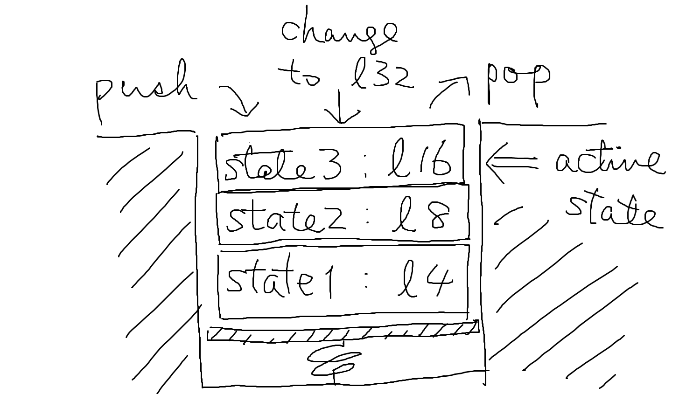

ここでは MML が備えるスタックの機構について解説します。
前提として、MML は「状態」を持っています。
状態とは、MML
の処理中に記憶している値のことです。たとえば、o
コマンドで設定するオクターブや l
コマンドで設定するデフォルト音長は状態の一種です。状態の影響によって、同じ
MML の文字列を解釈しても、結果が異なる場合があります。
o4l8
cde2 // = o4c8 o4d8 o4e2
o5l4
cde2 // = o5c4 o5d4 o5e2MML における状態には以下のものがあります：
ここからスタックの説明に入ります。
ModDL の MML 処理系では、状態を管理するためにスタックの機構を設けています。
スタックとは、各種設定値の状態を記憶（push）し、その状態を後から復元（pop）できる機構です。スタックを push した後で設定を変更しても、スタックを pop すれば、push した後に行った変更は破棄され、push する直前の状態に戻ります。
スタックを push した後、pop しないままさらに push することもできます。その場合、状態がその都度記憶されます。その後 1 回 pop すると、2 回目の push を行う直前の状態が復元されます。さらに pop すると、最初の push の直前の状態が復元されます。
MML でスタックを push/pop するには、{ … }
コマンドを使います。{ の時点で各種設定値が push
され、} で pop されます。
たとえば、以下の MML は：
l4 cde { l8 cde { l16 cde l32 fga } fga } fga以下と等価になります：
l4 cde l8 cde l16 cde l32 fga l8 fga l4 fga
{ … } を使う以外でもスタックが push/pop
されることがあります。次の機能を使ったときです：
[n … ]$mループは、開始時にスタックが push され、終了時に pop されます。このため、ループの中で状態を変更しても、ループの終了後の状態に影響を及ぼすことはありません。
たとえば、以下の MML は：
o2l8 [4 cl16>cc] cccc以下と等価になります：
o2 cl16>cc l8< cl16>cc l8< cl16>cc l8< cl16>cc l8< ccccループの中でオクターブと音長を明示的に復元していませんが、これらはループの次の周に入る際に自動的に復元されます。また、ループを脱出する際にも復元されます。
ループ終端で状態が復元されるのは、伝統的な多くの MML の仕様とは異なるところでしょう。
実は { … } は [1 …
] と等価です。
マクロの呼び出しでは、呼び出しの開始時にスタックが push され、終了時に pop されます。
スタックはトラックごとに独立しています。